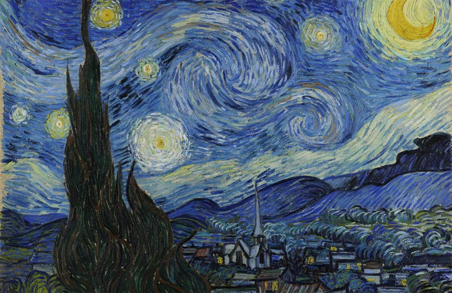

Only 37 years old when he died and having only sold one painting, van Gogh sadly did not live long enough to see the extent of his legacy – which includes his works now being some of the most expensive in the world.
Van Gogh Carrer
Until van Gogh was 27, he had explored several different jobs – he’d been a lay minister, teacher and art dealer. Suddenly, he abandoned these careers and decided to focus all his energy on painting and drawing – and once he got started, there was no stopping him! Over the next ten years, van Gogh went on to create a body of work which included almost 900 paintings, and a further 1,100 works on paper – which meant a new artwork every 36 hours (on average) – phew! It’s mind blowing how much he achieved in such a short time.

Van Gogh lived with mental illness throughout his life
While, it’s fairly well-known that van Gogh lived with a mental illness, we can’t be 100% certain around the details. What is fairly well understood though, is his symptoms included hallucinations, depression, and seizures – which at times were quite severe. Many modern day psychiatrists have attempted to diagnose his illness from the symptoms he showed, and possible diagnoses include schizophrenia, bipolar disorder, syphilis, hypergraphia, Geschwind syndrome, and temporal lobe epilepsy. It is also quite possible that he had a combination of these. Whatever his diagnosis, it was likely made worse by his lifestyle – which to put it nicely was not exactly healthy….

He was nicknamed ‘The Redheaded Madman’
As van Gogh’s mental health was often poor, he spent a lot of time in and out of hospital. Over the years, the hallucinations and delusions he experienced became more intense and frequent, and he started attracting the attention of his neighbours. Scared by his behaviour, they named him “le fou roux” (The Redheaded Madman) and rallied together to collect signatures for a petition against him (the Arles Petition). In response, the police evicted van Gogh from his home for good, and he once again returned to hospital.
‘Starry Night’ was created in an ‘asylum’
After his ear incident, van Gogh decided to check himself into the Saint-Paul-de-Mausole hospital known back then as an ‘asylum’, where he was diagnosed with ‘acute mania with generalised delirium’. Luckily for van Gogh, while he was in hospital he could continue creating his art – and he would spend the days looking through the barred windows at the scenery below. It was here he completed his most famous work: ‘Starry Night’. Starry Night in fact shows his view on different days, and even at different times of day. As he sat and watched the light and weather change, he painted the view at sunrise, moonrise, on sun-filled days, overcast days, windy days and rainy days. Although it’s recognised as a masterpiece, van Gogh was never happy with this piece and even went as far as saying he thought it, and others he completed while in hospital, were failures.
